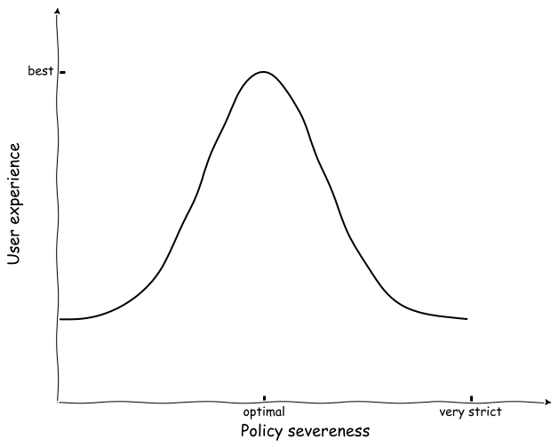
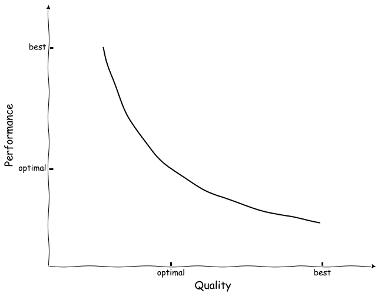
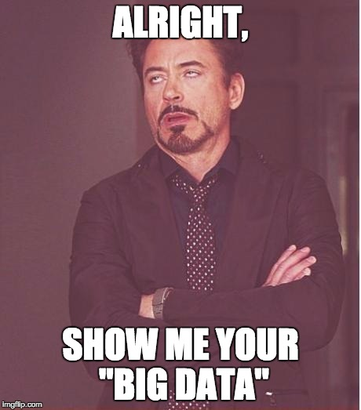
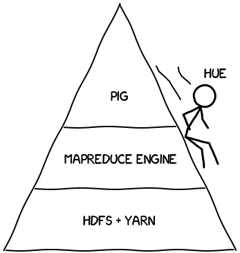
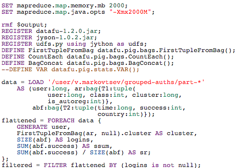

Mail.Ru Group - 26.03.2016 @ MIPT
Vadim Markovtsev, Mail department / Antispam team26.03.2016 @ MIPT
how much spam is allowed vs. how comfortable user is.  system load vs. how well emails are analyzed. 
A subfield of computer science[1] that evolved from the study of pattern recognition and computational learning theory in artificial intelligence.
Wikipedia
A term for data sets that are so large or complex that traditional data processing applications are inadequate.
This may include:
Most of the everyday problems are not big data.
 